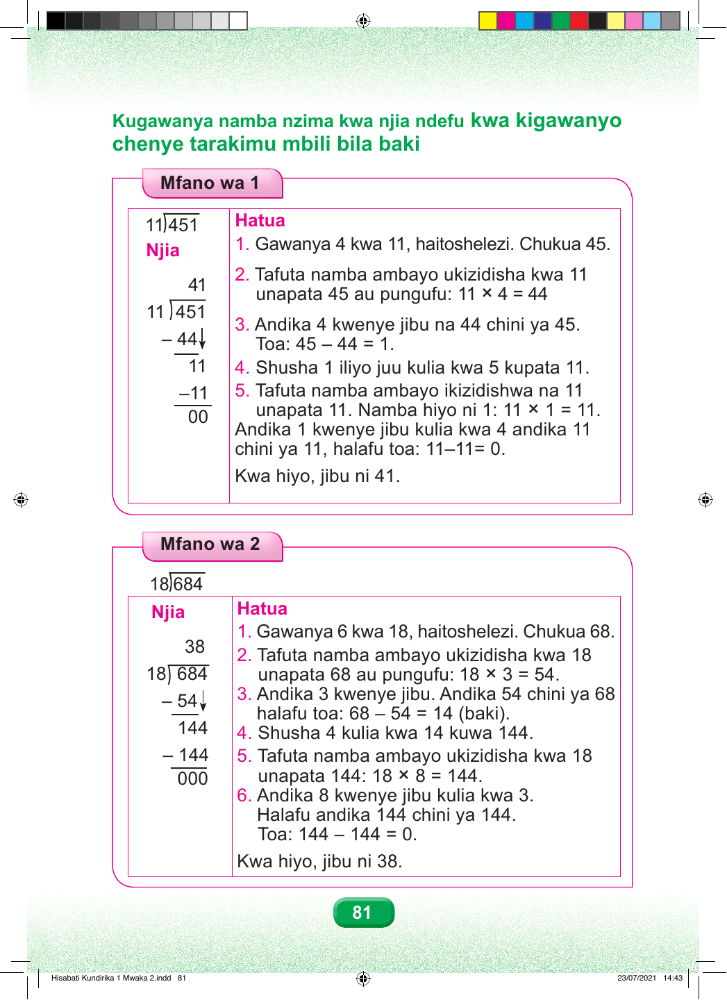

Kugawanya namba nzima kwa njia ndefu kwa kigawanyo chenye tarakimu mbili bila baki Mfano wa 1 11 451 Hatua 1. Gawanya 4 kwa 11, haitoshelezi. Chukua 45. Njia 2. Tafuta namba ambayo ukizidisha kwa 11 41 unapata 45 au pungufu: 11 × 4 = 44 11 451 3. Andika 4 kwenye jibu na 44 chini ya 45. – 44 Toa: 45 – 44 = 1. 11 4. Shusha 1 iliyo juu kulia kwa 5 kupata 11. –11 5. Tafuta namba ambayo ikizidishwa na 11 unapata 11. Namba hiyo ni 1: 11 × 1 = 11. 00 Andika 1 kwenye jibu kulia kwa 4 andika 11 chini ya 11, halafu toa: 11–11= 0. Kwa hiyo, jibu ni 41. Mfano wa 2 18 684 Njia Hatua 1. Gawanya 6 kwa 18, haitoshelezi. Chukua 68. 38 2. Tafuta namba ambayo ukizidisha kwa 18 18 684 unapata 68 au pungufu: 18 × 3 = 54. 3. Andika 3 kwenye jibu. Andika 54 chini ya 68 – 54 halafu toa: 68 – 54 = 14 (baki). 144 4. Shusha 4 kulia kwa 14 kuwa 144. – 144 5. Tafuta namba ambayo ukizidisha kwa 18 000 unapata 144: 18 × 8 = 144. 6. Andika 8 kwenye jibu kulia kwa 3. Halafu andika 144 chini ya 144. Toa: 144 – 144 = 0. Kwa hiyo, jibu ni 38. 81 Hisabati Kundirika 1 Mwaka 2.indd 81 23/07/2021 14:43